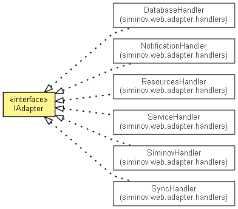

JavaScript is disabled on your browser.
Overview
Package
Class
Tree
Deprecated
Index
Help
Produced by Siminov Software Solution LLP
Prev Class
Next Class
Frames
No Frames
All Classes
Summary:
Nested |
Field |
Constr |
Method
Detail:
Field |
Constr |
Method
siminov.web.adapter
Interface IAdapter

All Known Implementing Classes:
DatabaseHandler
,
NotificationHandler
,
ResourcesHandler
,
ServiceHandler
,
SiminovHandler
,
SyncHandler
public interface
IAdapter
It is a blue print for classes which wants to provide implementation for Adapter bridge between native and web
Overview
Package
Class
Tree
Deprecated
Index
Help
Apache License 2.0
Prev Class
Next Class
Frames
No Frames
All Classes
Summary:
Nested |
Field |
Constr |
Method
Detail:
Field |
Constr |
Method
Copyright 2015